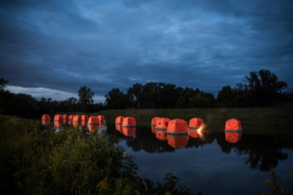
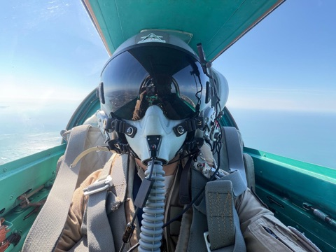
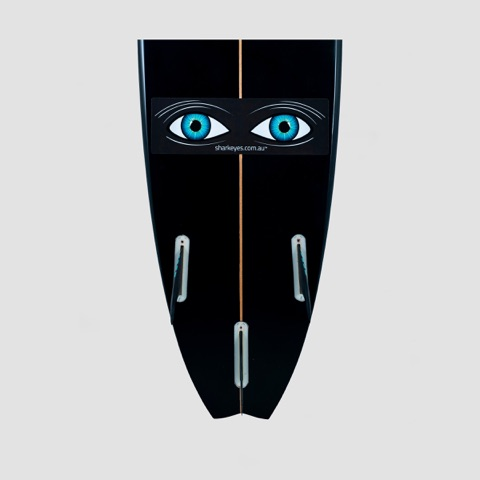
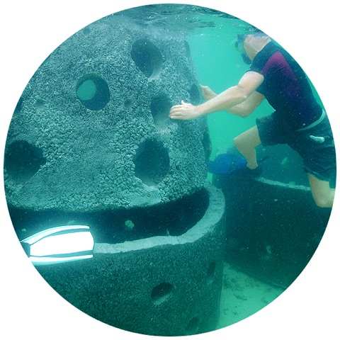

Sea, Sky & Space
Anything that floats, flies or leaves the planet.
Fuel pod relay
Don't carry the fuel. Meet it.
The hard part of going far is not distance, or even speed. It is fuel, and the fuel needed to carry the fuel. The relay sends the fuel out first. Some pods are tugs, spent entirely on shoving other pods up to speed. The rest coast ahead in a long line, each one moving faster than the one before.
The ship leaves nearly empty. It burns one pod to catch the next, which is already travelling at the speed the ship needs, and so on up the line. Pods carry food, water and supplies too, so the ship only ever holds what the next leg requires.
Nothing in the line is near anything else. The pods are strung across millions of miles of empty space, every one already moving fast, so each meeting is a high-speed rendezvous. Nobody launches them by hand, either: an uncrewed depot sends the pods out one after another, months ahead, until the whole route is staged before the ship leaves.
The rendezvous. The ship matches the pod at speed.
The depot. Machines stage the route months ahead.
The relay, drawn out.
Balloon platform tower
Build one platform in the sky. Stand on it and build the next.
Start with a single platform hung under a cluster of balloons and tethered to the ground. From that platform, raise another above it, then another. Every section is the same module: balloons, a light deck, a few cables. Supplies go up the chain, and the tower bootstraps itself higher and higher.
It is not a space elevator and does not pretend to be. It stops where balloons stop, and it is built to lean and drift with the air rather than fight it. The structure carries as little weight as it can. A single winch takes a person up or down, and each level is a place to stand and look out.
With enough balloons there is room near the top for a telescope above most of the weather, or a perch for launching drones and small aircraft that have already been lifted part of the way. Which gas does the lifting is still open: hydrogen lifts the most, helium is scarce, and sun-warmed air is the one that never runs out, at least by day.

One level: a light deck, a winch line, a telescope and a drone on its rail.
Tent-boat
A tent you can float and sleep in on the water.
Probe with a relay trail
A deep-space probe that drops a chain of relays behind it to phone home.
Ablative fluid nose nozzles
Pump fluid out of nozzles in a vehicle's nose so it carries the heat away.
Sound-barrier ride
A ride that takes paying passengers through the sound barrier.
Modular aircraft carrier
A carrier assembled from floating modules that link up at sea.
Tension cage for a submersible
Wrap a submersible in a cage of tension members to resist the deep.

Boat-steadying weights
Hang weighted plates about 20 feet down to steady a rolling boat.
Eyes on a surfboard
Paint eyes on the underside of a surfboard so sharks think they are being watched.
Apartments for fish
Build housing blocks underwater for fish to move into.
Cost-priced airline
An airline that publishes its costs and prices each seat from them.
Cold vapor as infrared smoke
A cold vapor cloud that hides things from heat cameras.
Stacked sheets to block glare
Stack thin sheets like tiny blinds to cut glare off water.
Somebody got there. These are real products and services that do what the idea does. Checked November 2026. Pictures come from the makers' own pages, or from Wikipedia.




Concept art only.